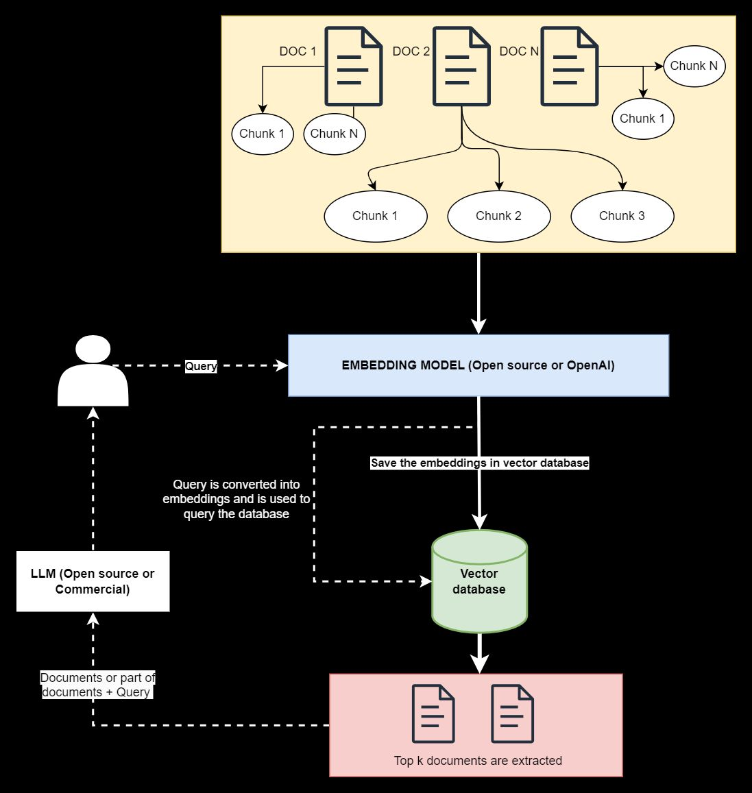

Practical Challenges in Developing Retrieval Augmented Generation (RAG) Systems
In this post, I'll discuss the practical challenges I encountered while developing Retrieval Augmented Generation systems (RAGs) for various clients. This topic is particularly relevant in the context of the hot topics within the generative AI ecosystem, where blogs and companies continually explore RAG integration.
What is RAG?
In simple terms, RAG is used to query and retrieve answers from a company's internal data. To simplify, documents are first transformed into embeddings and stored in a vector database. When a user poses a question, the top documents and the query are sent to the Language Model (LLM), and the user subsequently receives the answer. Please refer to the diagram above for a comprehensive overview.
Challenge 1: Effective Document Chunking
Imagine an organization with 100 documents of varying lengths, some being 50 pages, while others extend to 200 pages. The initial task is to segment each document into smaller, effective chunks by defining rules to find an optimal balance between containing sufficient information and avoiding excessive length. This remains a significant challenge due to non-sequential information, where a topic in chapter 7 may have valuable insights in a previous chapter, like chapter 4. Simple chunking may not capture this relevant information adequately.
This aspect remains an active research area with various approaches. One solution involves the implementation of knowledge graphs, which I successfully applied for one of my clients, yielding highly effective results.
Challenge 2: Handling Hierarchical Document Structures
Many of our documents have a hierarchical structure, with sections, subsections, and sub-subsections. To create robust embeddings, it's essential to convert this hierarchical structure into a flat structure. This is where expertise in information retrieval and data science plays a crucial role in developing an effective RAG system.
Challenge 3: Dealing with Document Updates
Suppose you have developed a highly functional RAG application for 100 documents, and it works seamlessly. However, if a company updates a particular document while the vector database still holds the old document embeddings, querying it will yield answers based on the outdated content with high confidence. This issue underscores the importance of metadata. For one of my clients, I addressed this situation by implementing document versioning.
Conclusion
In this post, I've discussed the modeling challenges to consider when developing a RAG application, without even delving into the unique challenges presented by images or audio. In my next post, I will explore the infrastructure challenges that require attention in RAG application development.
Personally, I believe that challenges drive innovation, and I look forward to further developments in this space. Please feel free to share any additional challenges you've encountered in the comments.